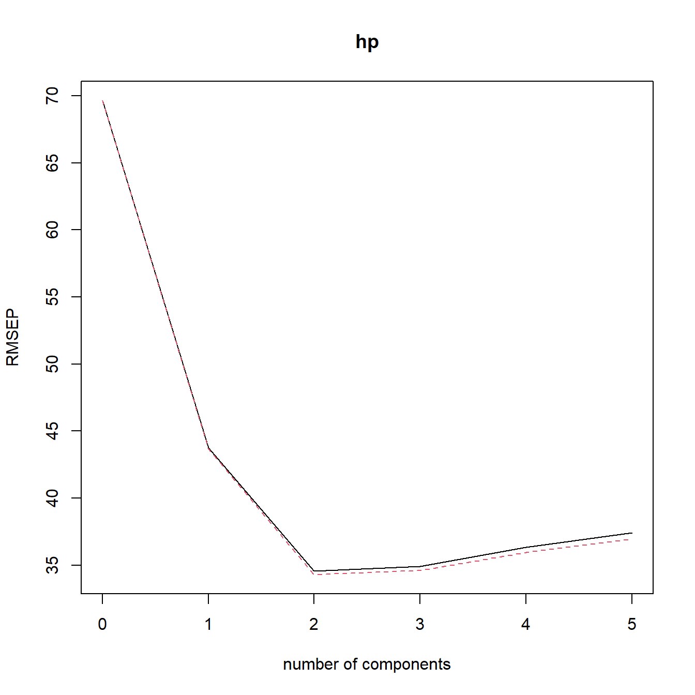
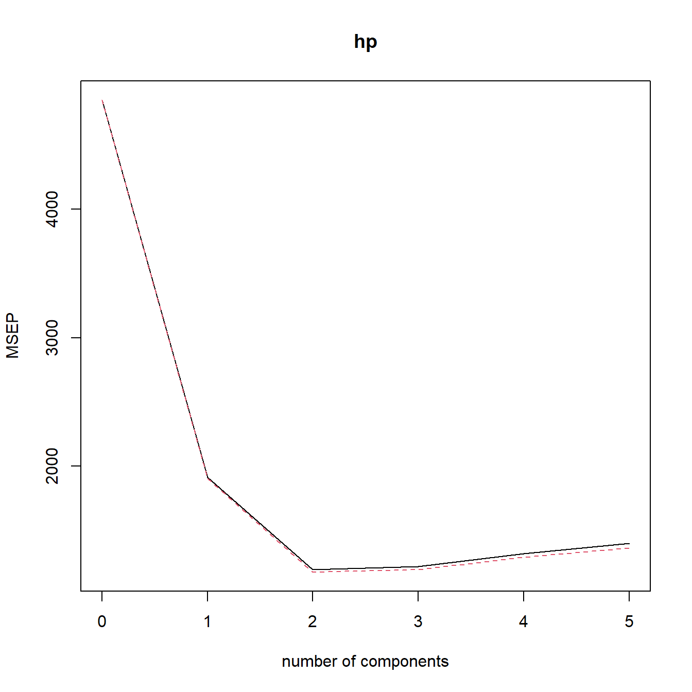
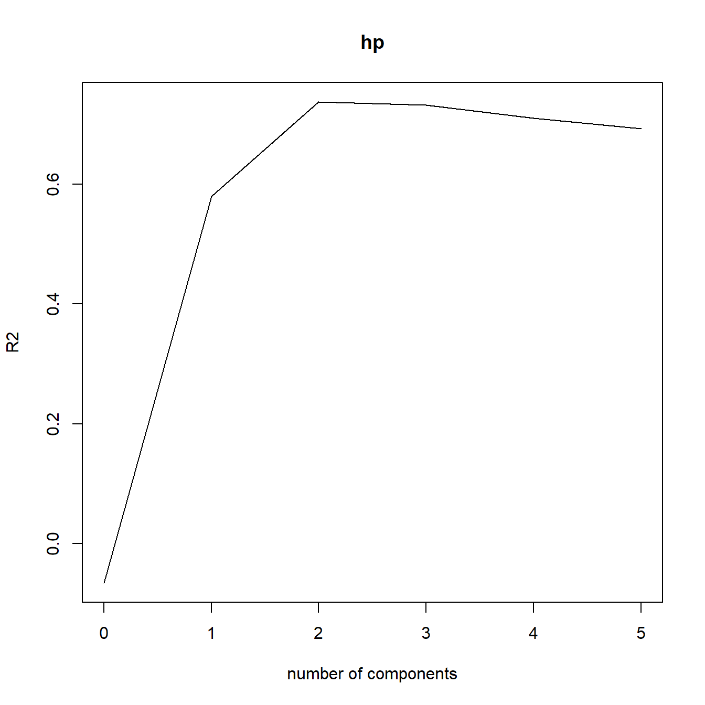
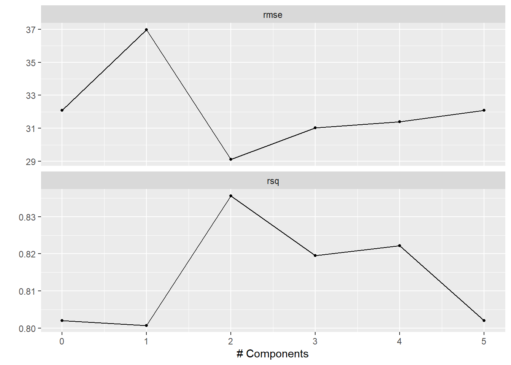

# 安装
install.packages("pls")31 主成分回归
很久之前有粉丝问如何实现主成分回归，最近又有粉丝来问了，赶紧写篇推文介绍一下。
公众号后台回复主成分分析即可获取主成分相关分析和可视化合集。
主成分回归的具体解释大家自己了解一下，简单来说就是先做主成分分析，然后用主成分作为自变量进行回归分析。
今天给大家介绍2种实现主成分分析的方法。
31.1 pls
首先是pls包可直接实现主成分回归。
加载R包：
rm(list = ls())
library(pls)
## Warning: package 'pls' was built under R version 4.5.1我们使用R自带的mtcars数据集进行演示。
head(mtcars)
## mpg cyl disp hp drat wt qsec vs am gear carb
## Mazda RX4 21.0 6 160 110 3.90 2.620 16.46 0 1 4 4
## Mazda RX4 Wag 21.0 6 160 110 3.90 2.875 17.02 0 1 4 4
## Datsun 710 22.8 4 108 93 3.85 2.320 18.61 1 1 4 1
## Hornet 4 Drive 21.4 6 258 110 3.08 3.215 19.44 1 0 3 1
## Hornet Sportabout 18.7 8 360 175 3.15 3.440 17.02 0 0 3 2
## Valiant 18.1 6 225 105 2.76 3.460 20.22 1 0 3 1直接1个函数就可以实现主成分回归了，非常简单：
set.seed(1)
model <- pcr(hp~mpg+disp+drat+wt+qsec, data=mtcars, scale=TRUE, validation="CV")
summary(model)
## Data: X dimension: 32 5
## Y dimension: 32 1
## Fit method: svdpc
## Number of components considered: 5
##
## VALIDATION: RMSEP
## Cross-validated using 10 random segments.
## (Intercept) 1 comps 2 comps 3 comps 4 comps 5 comps
## CV 69.66 43.74 34.58 34.93 36.34 37.40
## adjCV 69.66 43.65 34.30 34.61 35.95 36.95
##
## TRAINING: % variance explained
## 1 comps 2 comps 3 comps 4 comps 5 comps
## X 69.83 89.35 95.88 98.96 100.00
## hp 62.38 81.31 81.96 81.98 82.03结果首先告诉你自变量X的维度是32行，5列，因变量Y的维度是32行，1列。
使用的主成分个数是5。
VALIDATION: RMSEP是通过10折交叉验证得到的RMSE，先看CV这一行，只用截距项，RMSE为69.66，添加第一主成分之后RMSE是43.74。。。adjCV是调整后的RMSE。
最后一部分是主成分能够解释的方差百分比。
可视化主成分个数与各种模型指标的关系，默认指标是RMSE，可选择MAE或者R2：
validationplot(model)
validationplot(model, val.type="MSEP") # MAE
validationplot(model, val.type="R2")
对新数据进行预测，可自由选择主成分个数，根据上面的图，我们选择2个主成分：
test <- head(mtcars)
predict(model, test, ncomp = 2)
## , , 2 comps
##
## hp
## Mazda RX4 155.2385
## Mazda RX4 Wag 146.6904
## Datsun 710 100.4458
## Hornet 4 Drive 118.3935
## Hornet Sportabout 186.7221
## Valiant 111.244331.2 tidymodels
然后再介绍一下如何使用tidymodels实现主成分回归，这个过程就稍显复杂了。
suppressMessages(library(tidymodels))
tidymodels_prefer()虽然复杂但是很有逻辑，这个也是tidymodels的使用步骤，不管换什么模型，都是这一套步骤，打完一套组合拳即可：
- 建立模型设定；
- 数据划分；
- 配方（预处理步骤）；
- 工作流；
- 超参数调优
# 模型设定
set.seed(994)
lm_spec <- linear_reg() %>% set_engine("lm")
# 数据划分
mtcars_resamples <- vfold_cv(mtcars, v = 10)
# 配方（预处理步骤）
mtcars_pca_recipe <- recipe(hp~mpg+disp+drat+wt+qsec, data = mtcars) %>%
#step_dummy(all_nominal()) %>%
step_normalize(all_predictors()) %>% # 肯定是要scale的
step_pca(all_predictors(), num_comp = tune())
# 工作流
mtcars_pca_workflow <- workflow() %>%
add_model(lm_spec) %>%
add_recipe(mtcars_pca_recipe)
# 超参数调优
num_comp_grid <- grid_regular(num_comp(range = c(0, 5)), levels = 6)
mtcars_pca_tune <- tune_grid(mtcars_pca_workflow,
resamples = mtcars_resamples,
grid = num_comp_grid)这里进行超参数调优的目的是为了找出最佳的主成分个数，你可能也发现了，在tidymodels中实现主成分回归其实只是把主成分分析作为一个预处理步骤而已，本质上还是做回归分析。
结果可视化，从图中可以看出还是2个主成分的模型最好，和上面的结果是一样的：
autoplot(mtcars_pca_tune)
查看最佳结果：
show_best(mtcars_pca_tune)
## Warning in show_best(mtcars_pca_tune): No value of `metric` was given; "rmse"
## will be used.
## # A tibble: 5 × 7
## num_comp .metric .estimator mean n std_err .config
## <int> <chr> <chr> <dbl> <int> <dbl> <chr>
## 1 2 rmse standard 29.1 10 5.63 Preprocessor3_Model1
## 2 3 rmse standard 31.0 10 5.11 Preprocessor4_Model1
## 3 4 rmse standard 31.4 10 5.16 Preprocessor5_Model1
## 4 0 rmse standard 32.1 10 5.18 Preprocessor1_Model1
## 5 5 rmse standard 32.1 10 5.18 Preprocessor6_Model1使用最佳结果（2个主成分）重新建模，然后重新在训练集训练，然后对测试集预测：
mtcars_pca_workflow_final <-
finalize_workflow(mtcars_pca_workflow,
select_best(mtcars_pca_tune, metric = "rmse"))
mtcars_pca_fit_final <- fit(mtcars_pca_workflow_final,data = mtcars)
predict(mtcars_pca_fit_final, new_data = head(mtcars))
## # A tibble: 6 × 1
## .pred
## <dbl>
## 1 155.
## 2 147.
## 3 100.
## 4 118.
## 5 187.
## 6 111.公众号后台回复tidymodels即可获取合集。
两种方法，你喜欢哪种呢？